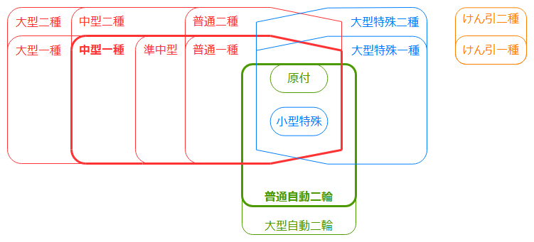
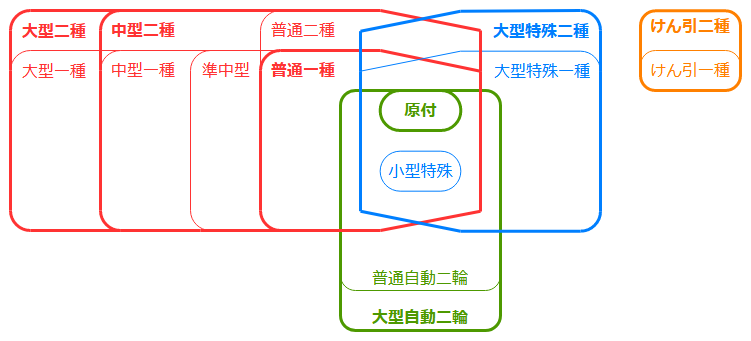
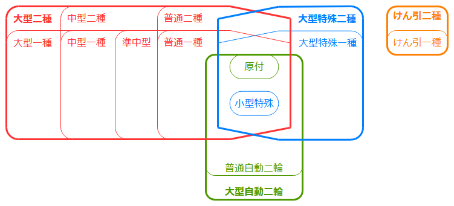
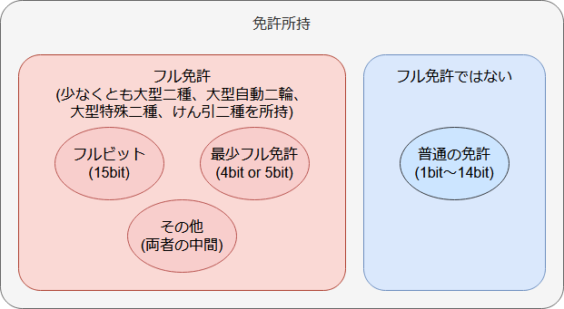
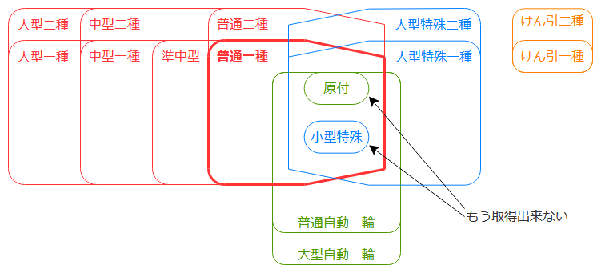
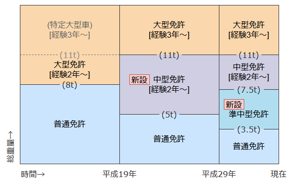

免許計画 きっかけと目指す方向
きっかけ
どっかから回ってきたツイートで、教育訓練給付制度の存在を知る。
(元のツイートを見つけられないのでうろ覚えだが、以下の画像とともに「もう資格を取らない理由はなくなりましたね」的ことが書かれているやつだった)

曰く、資格を取る際の受講費用の何割かが給付金として戻ってくるとか。
「ふーん。でも、仕事で使う資格は会社に費用出してもらいたいし、個人としてはそこまで資格が欲しいわけじゃないしなぁ。」と思いながら画像を眺めていたところ、見つけてしまったね、自動車免許の文字を。
「お、自動車免許系も対象になっている！しかも 40% か～。こんなのがあるなら、かねてから温めていた夢の一つ、免許計画をそろそろ進めちゃうか！」
と言うわけで、教育訓練給付制度を使いながら免許計画を進めることにした。
免許計画とは
運転免許を良い感じにコンプリートすること。後述の通り、当初はフルビットを目指そうと思っていたが、現実的ではないため代わりに最少フル免許を目指すこととした。用語の意味についても後述。
免許計画における前提知識
上位と下位の関係
運転免許は、上位下位の関係が多い。わかりやすい例だと、普通免許で原付も運転出来るとか、大型自動二輪で普通自動二輪を運転出来るとか。
現在15種類存在する運転免許を図で表現してみると、こんな感じになる。

- 大きく分類して4系統あるので、それぞれ違う色にしている
- 赤: 四輪系(普通～大型二種)
- 緑: 二輪系(原付～大型自動二輪)
- 青: 特殊形(小型特殊～大型特殊二種)
- 橙: けん引系(けん引一種、けん引二種)
- 上位免許は下位免許を内包するように描画している
- 普通自動二輪は原付と小型特殊を含んでおり、さらなる上位に大型自動二輪がある
- 普通二種は原付、小型特殊、普通一種を含んでおり、さらなる上位に中型二種、大型二種がある
例えば、中型一種と普通自動二輪を持っていることを、文字と枠線を太くして表現すると次のようになる。太線の内側にある準中型、普通一種、原付、小型特殊も運転することが出来、逆に外側にある大型一種などは運転することが出来ない。

用語
フルビット
フルビットとは、すべての免許を持っている状態である。すべての免許にビットが立っているので、フルビット。当然、すべての車を運転することが出来る。

『こち亀』の両さんの免許がフルビットなのはそこそこ有名(今とは免許の数が違うが)。当時それを読んだのが、いろいろな免許を取ろうと思ったきっかけかもしれない。
フル免許・実効フルビット
フル免許とは、(フルビットよりは浸透した言い方ではないが) すべての車を運転出来る状態である。上位の免許を持っていれば、必ずしも下位の免許を持っていなくても良い。「効力はフルビットと同じ」という意味で実効フルビットと呼ぶこともある。
例えば、原付・普通一種・中型二種・大型二種・大型自動二輪・大型特殊二種・けん引二種を所持している次の図はフル免許である。

フルビットはフル免許でもあるが、フル免許がフルビットとは限らない。
最少フル免許・最小フル免許
最少フル免許とは、フル免許のうち、一番免許の数が少ない状態のこと。ビット数が最少なフル免許。
各系統の最上位のみを取得していれば良いため、具体的には、大型二種・大型自動二輪・大型特殊二種・けん引二種の4つ(4ビット)のみを所持していればよい。
(ただし、二種免許の取得には基礎免許が必要なので、一部取消しなどを駆使しない限りは(取得時点での)普通一種か大型特殊一種も所持しているはずであり、その場合は5ビットとなる。)

たまに最少フルビットと呼ぶ人が居て、混乱する。
また当然、最少フル免許もフル免許に該当する。内包関係を図に表すと、こうなる。

一部取消し申請
(一部ではなく通常の)取消し申請は、いわゆる免許の「返納」のことで、これを行うともう車は運転出来なくなる。
一部取消し申請は、上位の免許は取り消するが下位の免許は引き続き所持する、としたいときに行う。この際に、今まで所持していなかった下位免許を取得することも可能(中型二種を取り消して中型一種を取得申請する、など)。
一般的には、「もう視力検査がきついから二種だけ取り消す」とか「車にはもう乗らないが原付だけ/小型特殊だけ引き続き必要」といった場合に行う。
なお、上位免許を取得している状態だと下位免許の一部取消し申請は行えない。
うっかり失効
更新期限を過ぎてしまい、免許を失効すること。
免許計画で何を目指すか
最初は漠然とフルビットを目指そうと思っていたが、調べてみるといろいろと大変であると言うことが判明する。
フルビットが大変な理由
すでに所持している免許の下位免許は取得出来ない
例えば、すでに普通免許を持っている人は原付免許や小型特殊免許を新たに取得することが出来ない。このため、その人がフルビットを目指す場合はまず普通免許を一部取消し申請して、原付免許と小型特殊免許を取得するところから始めないと行けない。また、普通免許を取り直すまでの間、自家用車などの運転も出来なくなる。

普通免許を取る前の段階からフルビットを目指してたとかでない限り、原付と小型特殊両方を取得している人はあまり居ないので、多くの人がこの時点で断念する。自分も、すでに旧普通免許(中型免許8t限定)を持っているため、いろいろと厳しいものがある。
- 今持っているものをいったん棄てて、お金と時間を掛けて再度取得する、というのが馬鹿らしい
- 再度教習所に行くのはお金が掛かりすぎるが、かと言って免許センターで直接受験する(いわゆる一発試験)ほど教科書通りの走り方が出来るとは思えない
- また、教習所や免許センターに車で行けないというのも難点
なお、別の選択肢として、あえてうっかり失効を起こし、救済措置(6ヶ月以内なら適性試験と手数料だけで再発行出来る)と平行して下位免許を取得するという裏技があるらしいが、出来なかったという情報などもあり、深くは確認していない。
あとから免許区分が増えることがある
いったんフルビットが完成したとしても、免許区分が新設されるとフルビットではなくなってしまう。通称、歯抜けフルビット。
それだけならしょうがないかもしれないが、通常、大型二種より下位に区分が増える(それまで運転出来ていたものが区分追加によって運転出来なくなるようなことにはならないため) ので、前述の「下位免許は取得出来ない」のせいで新免許だけを追加することは出来ないため、手間がものすごく大きい。
例えば、平成29年に準中型が新設されてフルビットではなくなった人が再度フルビットを目指す場合、中型一種・中型二種・大型一種・大型二種の4つ免許をそれぞれ再度取得する必要がある。

平成19年の中型免許追加時にも同様のことが起きている。とある人は、そのときは頑張って再取得するも、10年後の準中型免許追加の際には心が折れて再々取得を諦めたとかなんとか。
こう見ると最近はわりと頻繁に区分追加があるように見えてリスクを感じるし、いずれにせよ「将来フルビットじゃなくなるかもしれない」という不安とずっと付き合うのはそこそこストレスが大きいものと思われる。
お金も時間も結構掛かる
15個の免許をそれぞれ取ることになるので、その分各種コストが掛かる。
免許センターで直接受験する場合は平日に何回も行かなくちゃならないし、教習所に通う場合はもっとお金も時間も掛かる。
代わりに最少フル免許を目指そう
フルビットを目指すのはかなり大変そうと言うことが分かったので、代わりにフル免許を目指すことにした。
とは言え、中途半端なフル免許だと面白くないので、せっかくならなるべくビット数の少ないフル免許、出来れば最少フル免許にする方針でいろいろと調査することへ。